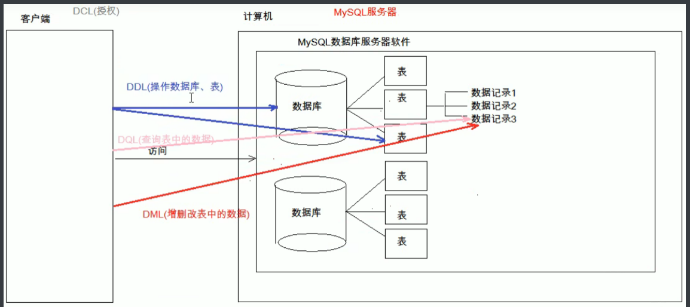
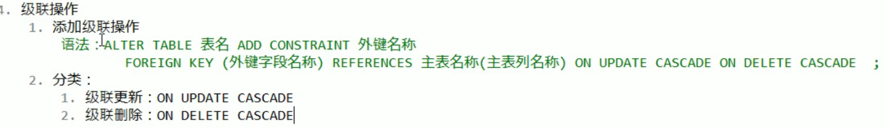
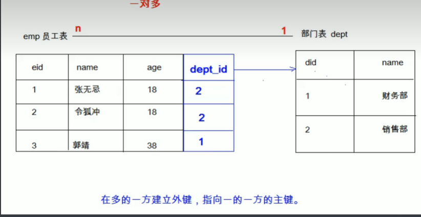
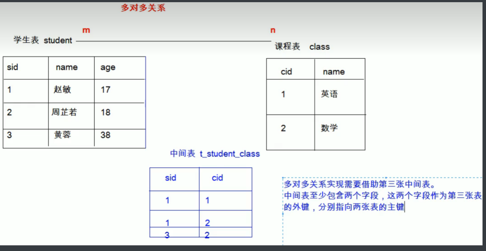

# JavaWeb
1.What: 使用 Java 语言开发互联网项目；开发网站；
# 数据库
# 数据库基本概念
1. 数据库 DateBase DB
2.what: 用于存储管理数据的仓库
3. 数据库特点：a 持久化存储数据，数据库就是一个文件系统 b 方便存储管理数据 c 使用同一的方式操作数据库 SQL
4 常见数据库软件： Oracle MySQL (Oracle 公司）
# MySQL 数据库软件
1. 安装 2. 卸载 3. 配置 a.mysql 服务，启动命令：cmd-<services.msc 打开服务窗口
使用管理员打开 cmd 查询状态 mysql -uroot -proot
启动服务 net start mysql 关闭服务 net stop mysql
b.mysql 的登陆 1.mysql -uroot -proot
c.mysql 退出 1.exit 2.quit
d.mysql 的目录结构
1. 安装目录 D 盘 核心配置文件 my.ini
2. 数据目录 C 盘隐藏 （数据库 ：文件夹）（表 ：文件 ） 数据
# SQL
# what: “
结构化查询语言；定义了操作所有关系型数据库的规则；每一种数据库操作的方式存在不一样的地方，称为” 方言 “
# SQL 通用语言
a. 单行或多行书写，分号结尾；
b.SQL 中不区分大小写，关键字中认为大写和小写是一样的；j 建议大写
c.3 种注释 a 单行 -- 空格 或 # b 多行 /* */
# SQL 分类
- Data Definition Language (DDL 数据定义语言) 如：建库，建表
- Data Manipulation Language (DML 数据操纵语言)，如：对表中的记录操作增删改
- Data Query Language (DQL 数据查询语言)，如：对表中的查询操作
- Data Control Language (DCL 数据控制语言)，如：对用户权限的设置
- 
# DDL : 操作数据库，表
# 操作数据库 CRUD
C-- 创建
创建数据库
create database 数据库名称；
创建 db4 数据库，判断是否存在；
create database if not exists db4；
创建 db4 数据库，判断是否存在，并制定字符集为 gbk;
create database if not exists db4 character set gbk;
R-- 查询
- $ 查询所有数据库的名称
show databases; - $ 查看某个数据库的字符集
show create database 数据库名称；
- $ 查询所有数据库的名称
U-- 修改
修改数据库的字符集
alter database 数据库名称 character set 字符集名称（utf8 ）；
D-- 删除
删除数据库
drop database 数据库名称；
先判断是否存在再删除
drop database if not exists 数据库名称；
查询当前正在使用的数据库名称
select database()；
使用数据库
use 数据库名称
# 操作表
C-- 创建
1. 创建表
create table 表名（列名 1 数据类型 1，列名 2 数据类型 1，...... 列名 n 数据类型 n）；2. 复制表：
create table 新表名 like 被复制的表名
int : 整数；
double: 小数；score double (5,2) 最多 5 位，小数 2 位
data: 日期，只包含年月日 yyyy-MM--dd
datetime: 年月日时分秒 yyyy-MM--dd HH:mm:ss;
varchar: 字符串 name varchar (20); 姓名最大 20 个字符
timestamp: 默认使用系统时间create table student(
id int,
name varchar(32),
age int,
score double(4,1),
birthday date,
insert_time timestamp);
3. 创建 db4 数据库，判断是否存在；
create database if not exists db4；
4.. 创建 db4 数据库，判断是否存在，并制定字符集为 gbk;
create database if not exists db4 character set gbk;
R-- 查询
$ 查询数据库中所有表的名称
show tables; $ 查看表的结构 desc 表名称；
U-- 修改
1. 修改表名
alter table 表名 rename to 新表名；2. 修改表的字符集
alter table 表名 character set 字符集名称（utf8 ）；
3. 添加列
alter table 表名 add 列名 数据类型；alter table 表名 add 列名 数据类型；4. 修改列名称 类型
alter table 表名 change 原列名 新列名 数据类型；
alter table 表名 modify 列名 新数据类型；5. 删除列
alter table 表名 drop 列名；D-- 删除
删除表
drop table 表名称； 先判断是否存在再删除
drop table if not exists 表名称；
SQLYog
客户端图形化工具
# DML: 增删改表中数据
添加数据：insert into 表名（列名 1.... 列名你）values (值 1.... 值 n);
注意：a 列名和值对应；b 表名后不定义列名，默认给所有列都添加值；c 除了数字，其余都需要用引号引起来，单双引号都行；
删除数据： delete form 表名 where 条件；
注意：如果不加条件，删除全部数据。
删除表，再创建一个一样的空表；
truncate table 表名；
delete from 表名；-- 不推荐使用，多次删除操作；
修改数据： update 表名 set 列名 1 = 值 1，... 列名 n = 值 n where 条件；
注意：如果不加条件，修改全部。
# DQL: 查找表中数据
select * from 表名；
# 语法
select 字段名列表 from 表名列表 where 条件列表 group by 分组字段
having 分组之后的条件 order by 排序 limit 分页限定
# 基础查询
- 多个字段的查询
-- 查询所有表数据 | |
SELECT * FROM student3; | |
SELECT | |
id, | |
NAME, | |
age | |
FROM | |
student3; | |
SELECT address FROM student3; |
去除重复 distinct
SELECT distinct address FROM student3;
计算列 数值型计算 ifnull (表达式 1，表达式 2)
表达式 1：那个字段需要判断是否为 null; 表达式 2： 字段为 null 后的替换值
起别名 As
-- 计算 math+english 的和并输出 | |
SELECT | |
NAME, | |
math, | |
english, | |
math+english | |
FROM | |
student3; | |
-- 遇到 null 参与的运算，结果都为 null; | |
SELECT | |
NAME, | |
math, | |
english, | |
math+IFNULL(english,0) -- 这样修改 | |
FROM | |
student3; | |
-- 起个别名 | |
SELECT | |
NAME, | |
math, | |
english, | |
math+IFNULL(english,0) AS 总分 -- 起别名 | |
FROM | |
student3; |
# 条件查询
where 字句后跟条件
运算符 1.<> =>= <= 2.BETWEEN...AND 3.IN (集合) 4. IS NULL
# 模糊查询
Like _ 单个任意字符 % 多个任意字符
-- 查询年龄 > 40 的 等于 = 不等于！= 或 & lt;> 并且 and 或者 or | |
SELECT * FROM student3 WHERE age>40; | |
SELECT * FROM student3 WHERE age>40; | |
SELECT * FROM student3 WHERE age>=20 && age<40; | |
SELECT * FROM student3 WHERE age>=20 AND age< 40; | |
SELECT * FROM student3 WHERE age BETWEEN 20 AND 40; | |
-- 查询年龄 20，40 的人信息 | |
SELECT * FROM student3 WHERE age = 20 OR age = 40; | |
SELECT * FROM student3 WHERE age IN( 20 , 40); -- 只要是 in 中的数字都输出 | |
-- 查询英语成绩为 nill 的； | |
SELECT * FROM student3 WHERE english = NULL; -- 写法错误不能用 = 判断，等于用 is 判断 ，不等于用 isnot; | |
SELECT * FROM student3 WHERE english IS NULL; | |
SELECT * FROM student3 WHERE english IS NOT NULL; | |
-- 查询性马的数据 like | |
SELECT * FROM student3 WHERE NAME LIKE '马%'; | |
SELECT * FROM student3 WHERE NAME LIKE '_化%'; | |
SELECT * FROM student3 WHERE NAME LIKE '___'; | |
-- 查询姓名中含马的人 | |
SELECT * FROM student3 WHERE NAME LIKE '%德%'; |
# 排序查询
order by 字句
order by 排序字段 1 排序方式 1，排序字段 2 排序方式 2，....
默认：ASC: 升序； DESC: 降序；
注意：如果有多个排序条件， 当前边条件值一样，才会判断第二条件；
# 聚合函数
将 1 一列数据作为一个整体，进行列纵向计算；、
count： 计算个数 max min sum avg: 计算平均值
SELECT COUNT(NAME) FROM student3;
注意： 排除 Null, 不计算在内；使用 ifnull（ , ）函数
# 分组查询
语法： group by 分组字段
注意：1. 分组之后查询字段：分组字段，聚合字段
2.where 和 having 区别： where 在分组前进行限定，不满足条件不进行分组；having 在分组后进行限定，不满足则不会被查询出来；
3where 后不可以跟聚合函数，having 可以；
# 分页查询
limit 开始的索引，每页查询的条数；
-- 每页显示 3 条数据
SELECT * FROM student3 LIMIT 0,3; -- 第 1 页
SELECT * FROM student3 LIMIT 3,3; -- 第 2 页
SELECT * FROM student3 LIMIT 6,3; -- 第 3 页
-- 公式：开始的索引 = （当前页码 - 1）* 每页显示的条数；
分页操作 limit 是一个 mysql “方言”；
# 约束
对数据进行限定；
分类：主键约束：primary key
非空约束 ： not null
唯一约束：unique
外键约束： foreign key
# 非空约束 ： not null
1. 创建表时添加约束；
CREATE TABLE st( | |
id INT, | |
NAME VARCHAR(20) NOT NULL -- name 为非空 | |
); | |
SELECT * FROM st; | |
-- 删除 name 的非空约束； | |
ALTER TABLE st MODIFY NAME VARCHAR(20); |
2. 创建表完添加约束；
CREATE TABLE st( | |
id INT, | |
NAME VARCHAR(20) | |
); | |
ALTER TABLE st MODIFY NAME VARCHAR(20) NOT NULL; |
# 唯一约束：unique
，某一列的值不能重复；
注意： 唯一约束可以用 null; 但是只能有一个；
-- 创建表示添加唯一约束 | |
CREATE TABLE st( | |
id INT, | |
number VARCHAR(20) UNIQUE -- 手机号唯一 | |
); | |
-- 删除唯一约束 | |
ALTER TABLE st MODIFY number VARCHAR(20);-- 错误 | |
ALTER TABLE st DROP INDEX number; -- 正确 | |
2.可以创建表完添加约束； |
# 主键约束： primary key
1. 非空 且 唯一
2. 一张表只能有一个字段为主键
3. 主键就是唯一标识
自动增长： 如果某一列是数值类型的，使用 auto-increment 可完成自动增长
-- 创建表示添加主键约束 | |
CREATE TABLE st( | |
id INT primer key auto_increment, -- 给 id 添加主键约束并完成自增长 | |
number VARCHAR(20) | |
); | |
-- 删除主键约束 | |
ALTER TABLE st DROP PRIMARY KEY; -- 正确 |
# 外键约束： foreign key
语法 让表于表产生关系，保证数据正确性；
create table 表名（ | |
........ | |
外键列 | |
constraint 外键名称 foreign key 外键列明称 references 主表名称（主表列名称） | |
） | |
-- 删除外键 |
# 级联操作
添加外键，设置级联更新 ---- 添加操作 删除操作

# 数据库的设计
# 多表之间的关系
1. 分类
一对一： 一个人 - 一张身份证
一对多，多对一： 一个部门 - 多个员工
多对多：多个学生 - 多个课程
2. 实现：
一对一：

多对多： 联合主键

# 数据库设计的范式
设计数据库遵循的规范
第一范式（1FN）: 每一列都是不可分割的原子数据项；
1 存在非常严重的数据冗余；2 数据添加存在问题；3 数据删除存在问题
第二范式：在 1FN 基础上，非码属性必须依赖于候选码 (消除非主属性带主属性的部分依赖)
函数依赖： A -> B; 通过 A 属性（属性组）确定唯一 B 属性的值；则称 B 依赖于 A;
学号 -> 姓名 （学号，课程 ）-> 分数
完全函数依赖 ： 如果 A 是属性组，则 B 属性值依赖 A 属性组的所有的属性值；（学号，课程 ）-> 分数
部分函数依赖 ： 如果 A 是属性组，则 B 属性值只需要依赖 A 属性组的某一些的属性值；（学号，课程 ）-> 姓名
传递函数依赖： a->b; b->c; c 传递函数依赖于 a; 学号 -> 姓名，姓名 -> 性别；
码： 一张表中，一个属性或属性组，被其他属性完全依赖，则称这个属性或属性组为该表的码；
主属性： 码属性组中的所有属性；
非主属性： 除码属性外其他的属性；
第三范式：在 2FN 基础上，任何非主属性不依赖其他非主属性（取消传递依赖）
# 数据库的备份还原
1. 备份命令行： mysqldump -u 用户名 -p 密码 数据库名称 > 保存的路径
2. 还原： 登录，创建，使用数据库，执行文件 source 文件路径；
图形化工具：
# 多表查询
查询语法：
· select
・ 列名列表
・ from
・ 表名列表
・ where....
笛卡尔积：
有两个集合 A,B . 取这两个集合的所有组成情况。
要完成多表查询，需要消除无用的数据
* 准备sql | |
# 创建部门表 | |
CREATE TABLE dept( | |
id INT PRIMARY KEY AUTO_INCREMENT, | |
NAME VARCHAR(20) | |
); | |
INSERT INTO dept (NAME) VALUES ('开发部'),('市场部'),('财务部'); | |
# 创建员工表 | |
CREATE TABLE emp ( | |
id INT PRIMARY KEY AUTO_INCREMENT, | |
NAME VARCHAR(10), | |
gender CHAR(1), -- 性别 | |
salary DOUBLE, -- 工资 | |
join_date DATE, -- 入职日期 | |
dept_id INT, | |
FOREIGN KEY (dept_id) REFERENCES dept(id) -- 外键，关联部门表 (部门表的主键) | |
); | |
INSERT INTO emp(NAME,gender,salary,join_date,dept_id) VALUES('孙悟空','男',7200,'2013-02-24',1); | |
INSERT INTO emp(NAME,gender,salary,join_date,dept_id) VALUES('猪八戒','男',3600,'2010-12-02',2); | |
INSERT INTO emp(NAME,gender,salary,join_date,dept_id) VALUES('唐僧','男',9000,'2008-08-08',2); | |
INSERT INTO emp(NAME,gender,salary,join_date,dept_id) VALUES('白骨精','女',5000,'2015-10-07',3); | |
INSERT INTO emp(NAME,gender,salary,join_date,dept_id) VALUES('蜘蛛精','女',4500,'2011-03-14',1); | |
* 多表查询的分类： | |
1. 内连接查询： | |
1. 隐式内连接：使用where条件消除无用数据 | |
-- 查询所有员工信息和对应的部门信息 | |
SELECT * FROM emp,dept WHERE emp.`dept_id` = dept.`id`; | |
-- 查询员工表的名称，性别。部门表的名称 | |
SELECT emp.name,emp.gender,dept.name FROM emp,dept WHERE emp.`dept_id` = dept.`id`; | |
SELECT | |
t1.name, -- 员工表的姓名 | |
t1.gender,-- 员工表的性别 | |
t2.name -- 部门表的名称 | |
FROM | |
emp t1, == 起别名 | |
dept t2 | |
WHERE | |
t1.`dept_id` = t2.`id`; | |
2. 显式内连接： | |
* 语法： select 字段列表 from 表名1 [inner] join 表名2 on 条件 | |
* 例如： | |
* SELECT * FROM emp INNER JOIN dept ON emp.`dept_id` = dept.`id`; | |
* SELECT * FROM emp JOIN dept ON emp.`dept_id` = dept.`id`; | |
3. 内连接查询： | |
1. 从哪些表中查询数据 | |
2. 条件是什么 | |
3. 查询哪些字段 | |
2. 外链接查询： | |
1. 左外连接： | |
* 语法：select 字段列表 from 表1 left [outer] join 表2 on 条件； | |
* 查询的是左表所有数据以及其交集部分。 | |
* 例子： | |
-- 查询所有员工信息，如果员工有部门，则查询部门名称，没有部门，则不显示部门名称 | |
SELECT t1.*,t2.`name` FROM emp t1 LEFT JOIN dept t2 ON t1.`dept_id` = t2.`id`; | |
2. 右外连接： | |
* 语法：select 字段列表 from 表1 right [outer] join 表2 on 条件； | |
* 查询的是右表所有数据以及其交集部分。 | |
* 例子： | |
SELECT * FROM dept t2 RIGHT JOIN emp t1 ON t1.`dept_id` = t2.`id`; | |
3. 子查询： | |
* 概念：查询中嵌套查询，称嵌套查询为子查询。 | |
-- 查询工资最高的员工信息 | |
-- 1 查询最高的工资是多少 9000 SELECT MAX (salary) FROM emp; | |
-- 2 查询员工信息，并且工资等于 9000 的 SELECT * FROM emp WHERE emp.`salary` = 9000; | |
-- 一条 sql 就完成这个操作。子查询 | |
SELECT * FROM emp WHERE emp.`salary` = (SELECT MAX(salary) FROM emp); | |
* 子查询不同情况 | |
1. 子查询的结果是单行单列的： | |
* 子查询可以作为条件，使用运算符去判断。 运算符： > >= < <= = | |
-- 查询员工工资小于平均工资的人 | |
SELECT * FROM emp WHERE emp.salary < (SELECT AVG(salary) FROM emp); | |
2. 子查询的结果是多行单列的： | |
* 子查询可以作为条件，使用运算符in来判断 | |
-- 查询 ' 财务部 ' 和 ' 市场部 ' 所有的员工信息 | |
SELECT id FROM dept WHERE NAME = '财务部' OR NAME = '市场部'; | |
SELECT * FROM emp WHERE dept_id = 3 OR dept_id = 2; | |
-- 子查询 | |
SELECT * FROM emp WHERE dept_id IN (SELECT id FROM dept WHERE NAME = '财务部' OR NAME = '市场部'); | |
3. 子查询的结果是多行多列的： | |
* 子查询可以作为一张虚拟表参与查询 | |
-- 查询员工入职日期是 2011-11-11 日之后的员工信息和部门信息 | |
-- 子查询 | |
SELECT * FROM dept t1 ,(SELECT * FROM emp WHERE emp.`join_date` > '2011-11-11') t2 | |
WHERE t1.id = t2.dept_id; | |
-- 普通内连接 | |
SELECT * FROM emp t1,dept t2 WHERE t1.`dept_id` = t2.`id` AND t1.`join_date` > '2011-11-11 |
# 多表练习查询
* 多表查询练习 | |
-- 部门表 | |
CREATE TABLE dept ( | |
id INT PRIMARY KEY PRIMARY KEY, -- 部门 id | |
dname VARCHAR(50), -- 部门名称 | |
loc VARCHAR(50) -- 部门所在地 | |
); | |
-- 添加 4 个部门 | |
INSERT INTO dept(id,dname,loc) VALUES | |
(10,'教研部','北京'), | |
(20,'学工部','上海'), | |
(30,'销售部','广州'), | |
(40,'财务部','深圳'); | |
-- 职务表，职务名称，职务描述 | |
CREATE TABLE job ( | |
id INT PRIMARY KEY, | |
jname VARCHAR(20), | |
description VARCHAR(50) | |
); | |
-- 添加 4 个职务 | |
INSERT INTO job (id, jname, description) VALUES | |
(1, '董事长', '管理整个公司，接单'), | |
(2, '经理', '管理部门员工'), | |
(3, '销售员', '向客人推销产品'), | |
(4, '文员', '使用办公软件'); | |
-- 员工表 | |
CREATE TABLE emp ( | |
id INT PRIMARY KEY, -- 员工 id | |
ename VARCHAR(50), -- 员工姓名 | |
job_id INT, -- 职务 id | |
mgr INT , -- 上级领导 | |
joindate DATE, -- 入职日期 | |
salary DECIMAL(7,2), -- 工资 | |
bonus DECIMAL(7,2), -- 奖金 | |
dept_id INT, -- 所在部门编号 | |
CONSTRAINT emp_jobid_ref_job_id_fk FOREIGN KEY (job_id) REFERENCES job (id), -- 关联 | |
CONSTRAINT emp_deptid_ref_dept_id_fk FOREIGN KEY (dept_id) REFERENCES dept (id) | |
); | |
-- 添加员工 | |
INSERT INTO emp(id,ename,job_id,mgr,joindate,salary,bonus,dept_id) VALUES | |
(1001,'孙悟空',4,1004,'2000-12-17','8000.00',NULL,20), | |
(1002,'卢俊义',3,1006,'2001-02-20','16000.00','3000.00',30), | |
(1003,'林冲',3,1006,'2001-02-22','12500.00','5000.00',30), | |
(1004,'唐僧',2,1009,'2001-04-02','29750.00',NULL,20), | |
(1005,'李逵',4,1006,'2001-09-28','12500.00','14000.00',30), | |
(1006,'宋江',2,1009,'2001-05-01','28500.00',NULL,30), | |
(1007,'刘备',2,1009,'2001-09-01','24500.00',NULL,10), | |
(1008,'猪八戒',4,1004,'2007-04-19','30000.00',NULL,20), | |
(1009,'罗贯中',1,NULL,'2001-11-17','50000.00',NULL,10), | |
(1010,'吴用',3,1006,'2001-09-08','15000.00','0.00',30), | |
(1011,'沙僧',4,1004,'2007-05-23','11000.00',NULL,20), | |
(1012,'李逵',4,1006,'2001-12-03','9500.00',NULL,30), | |
(1013,'小白龙',4,1004,'2001-12-03','30000.00',NULL,20), | |
(1014,'关羽',4,1007,'2002-01-23','13000.00',NULL,10); | |
-- 工资等级表 | |
CREATE TABLE salarygrade ( | |
grade INT PRIMARY KEY, -- 级别 | |
losalary INT, -- 最低工资 | |
hisalary INT -- 最高工资 | |
); | |
-- 添加 5 个工资等级 | |
INSERT INTO salarygrade(grade,losalary,hisalary) VALUES | |
(1,7000,12000), | |
(2,12010,14000), | |
(3,14010,20000), | |
(4,20010,30000), | |
(5,30010,99990); | |
-- 需求： | |
-- 1. 查询所有员工信息。查询员工编号，员工姓名，工资，职务名称，职务描述 | |
/* | |
分析： | |
1. 员工编号，员工姓名，工资，需要查询 emp 表 职务名称，职务描述 需要查询 job 表 | |
2. 查询条件 emp.job_id = job.id | |
*/ | |
SELECT | |
t1.`id`, -- 员工编号 | |
t1.`ename`, -- 员工姓名 | |
t1.`salary`,-- 工资 | |
t2.`jname`, -- 职务名称 | |
t2.`description` -- 职务描述 | |
FROM | |
emp t1, job t2 | |
WHERE | |
t1.`job_id` = t2.`id`; | |
-- 2. 查询员工编号，员工姓名，工资，职务名称，职务描述，部门名称，部门位置 | |
/* | |
分析： | |
1. 员工编号，员工姓名，工资 emp 职务名称，职务描述 job 部门名称，部门位置 dept | |
2. 条件： emp.job_id = job.id and emp.dept_id = dept.id | |
*/ | |
SELECT | |
t1.`id`, -- 员工编号 | |
t1.`ename`, -- 员工姓名 | |
t1.`salary`,-- 工资 | |
t2.`jname`, -- 职务名称 | |
t2.`description`, -- 职务描述 | |
t3.`dname`, -- 部门名称 | |
t3.`loc` -- 部门位置 | |
FROM | |
emp t1, job t2, dept t3 | |
WHERE | |
t1.`job_id` = t2.`id` AND t1.`dept_id` = t3.`id`; | |
-- 3. 查询员工姓名，工资，工资等级 | |
/* | |
分析： | |
1. 员工姓名，工资 emp 工资等级 salarygrade | |
2. 条件 emp.salary >= salarygrade.losalary and emp.salary <= salarygrade.hisalary | |
emp.salary BETWEEN salarygrade.losalary and salarygrade.hisalary | |
*/ | |
SELECT | |
t1.ename , | |
t1.`salary`, | |
t2.* | |
FROM emp t1, salarygrade t2 | |
WHERE t1.`salary` BETWEEN t2.`losalary` AND t2.`hisalary`; | |
-- 4. 查询员工姓名，工资，职务名称，职务描述，部门名称，部门位置，工资等级 | |
/* | |
分析： | |
1. 员工姓名，工资 emp ， 职务名称，职务描述 job 部门名称，部门位置，dept 工资等级 salarygrade | |
2. 条件： emp.job_id = job.id and emp.dept_id = dept.id and emp.salary BETWEEN salarygrade.losalary and salarygrade.hisalary | |
*/ | |
SELECT | |
t1.`ename`, | |
t1.`salary`, | |
t2.`jname`, | |
t2.`description`, | |
t3.`dname`, | |
t3.`loc`, | |
t4.`grade` | |
FROM | |
emp t1,job t2,dept t3,salarygrade t4 | |
WHERE | |
t1.`job_id` = t2.`id` | |
AND t1.`dept_id` = t3.`id` | |
AND t1.`salary` BETWEEN t4.`losalary` AND t4.`hisalary`; | |
-- 5. 查询出部门编号、部门名称、部门位置、部门人数 | |
/* | |
分析： | |
1. 部门编号、部门名称、部门位置 dept 表。 部门人数 emp 表 | |
2. 使用分组查询。按照 emp.dept_id 完成分组，查询 count (id) | |
3. 使用子查询将第 2 步的查询结果和 dept 表进行关联查询 | |
*/ | |
SELECT | |
t1.`id`,t1.`dname`,t1.`loc` , t2.total | |
FROM | |
dept t1, | |
(SELECT | |
dept_id,COUNT(id) total | |
FROM | |
emp | |
GROUP BY dept_id) t2 | |
WHERE t1.`id` = t2.dept_id; | |
-- 6. 查询所有员工的姓名及其直接上级的姓名，没有领导的员工也需要查询 | |
/* | |
分析： | |
1. 姓名 emp， 直接上级的姓名 emp | |
* emp 表的 id 和 mgr 是自关联 | |
2. 条件 emp.id = emp.mgr | |
3. 查询左表的所有数据，和 交集数据 | |
* 使用左外连接查询 | |
*/ | |
/* | |
select | |
t1.ename, | |
t1.mgr, | |
t2.`id`, | |
t2.ename | |
from emp t1, emp t2 | |
where t1.mgr = t2.`id`; | |
*/ | |
SELECT | |
t1.ename, | |
t1.mgr, | |
t2.`id`, | |
t2.`ename` | |
FROM emp t1 | |
LEFT JOIN emp t2 | |
ON t1.`mgr` = t2.`id`; |
# 事务
# 基本介绍
概念：
- 如果一个包含多个步骤的业务操作，被事务管理，那么这些操作要么同时成功，要么同时失败。
操作：
开启事务： start transaction;
回滚：rollback;
提交：commit;
-- 发现执行没有问题，提交事务
COMMIT; -- 发现出问题了，回滚事务
ROLLBACK;MySQL 数据库中事务默认自动提交
a 事务提交的两种方式：
自动提交：
mysql 就是自动提交的
一条 DML (增删改) 语句会自动提交一次事务。
手动提交：
Oracle 数据库默认是手动提交事务
需要先开启事务，再提交
b 修改事务的默认提交方式：
查看事务的默认提交方式：SELECT @@autocommit; -- 1 代表自动提交 0 代表手动提交
修改默认提交方式： set @@autocommit = 0;
# 事务的四大特征
1 原子性：是不可分割的最小操作单位，要么同时成功，要么同时失败。
2 持久性：当事务提交或回滚后，数据库会持久化的保存数据。
3 隔离性：多个事务之间。相互独立。
4 一致性：事务操作前后，数据总量不变
# 事务的隔离级别
概念：多个事务之间隔离的，相互独立的。但是如果多个事务操作同一批数据，则会引发一些问题，设置不同的隔离级别就可以解决这些问题。
存在问题：、
脏读：一个事务，读取到另一个事务中没有提交的数据
不可重复读(虚读)：在同一个事务中，两次读取到的数据不一样。
幻读：一个事务操作 (DML) 数据表中所有记录，另一个事务添加了一条数据，则第一个事务查询不到自己的修改。
隔离级别：
read uncommitted：读未提交
产生的问题：脏读、不可重
read committed：读已提交 （Oracle）
产生的问题：不可重复读、幻读
repeatable read：可重复读 （MySQL 默认）
产生的问题：幻读
serializable：串行化
可以解决所有的问题
注意：隔离级别从小到大安全性越来越高，但是效率越来越低
- 数据库查询隔离级别：
- select @@tx_isolation;
- 数据库设置隔离级别：
- set global transaction isolation level 级别字符串；
# DCL: 管理用户，授权
# 管理用户
添加用户 ---create user ' 用户名 '@' 主机名 ' identified by ' 密码 '；
删除用户 ---drop user ' 用户名 '@' 主机名 ';
修改用户密码 ---1.update user set password = password (‘新密码’) where user = ' 用户名 ';
2.set password for ' 用户名 '@' 主机名 ' = password (‘新密码’) ；
查询用户 ---1. 切换到 mysql 数据库 use mysql;
2. 查询 user 表 select * from uaer;
# 授权
查询权限 show grants for ' 用户名 '@' 主机名 ' ;
授予权限 grant 权限列表 on 数据库名。表名 to ' 用户名 '@' 主机名 ' ；
撤销权限 revoke 权限列表 on 数据库名。表名 from ' 用户名 '@' 主机名 ' ；